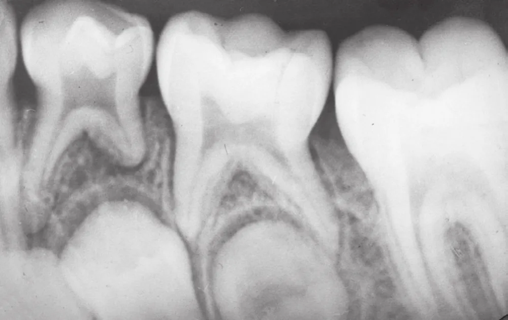

نسخه استخراجشده؛ ترجمه یا تأیید علمی انجام نشده است. وضعیت: captured
در دندان شیری، لایهی مینا و عاج بهمراتب نازکتر از دندان دائمی است؛ یعنی پالپ از سطح فاصلهی کمتری دارد.
شاخهای پالپ بلندترند و بلندترینشان مزیوباکال است — دقیقاً همانجایی که فرز هنگام تراش اکلوزال وارد میشود.
دو پیامد مستقیم: عمق تراش باید کمتر باشد، و بیاحتیاطی در گوشهی مزیوباکال زودتر از هر جای دیگری به پالپ میرسد.
و یک تفاوت مهم دیگر: کف اتاقک پالپ نازک است و کانالهای فرعی به ناحیهی فورکا راه دارند. به همین دلیل عفونت دندان شیری اغلب بهجای نوک ریشه، خودش را در فورکا نشان میدهد.

تماس پروگزیمال در دندان شیری پهن و مسطح است، نه نقطهای مثل دندان دائمی.
دو پیامد: پوسیدگی بیندندانی در معاینهی بالینی دیر دیده میشود و به رادیوگرافی بایتوینگ نیاز دارد؛ و ماتریکس باید همان تماس پهن را بازسازی کند، نه یک نقطه.
باریک شدن ناحیهی گردن و برجستگی مشخص سرویکال، دو نکتهی عملی میسازد: باند ماتریکس باید خوب به گردن دندان بچسبد، و همین برجستگی است که روکش استیل را در جای خود قفل میکند.
تاج کوتاهتر و سطح اکلوزال باریکتر است — پس فضای کمتری برای خطا داری.